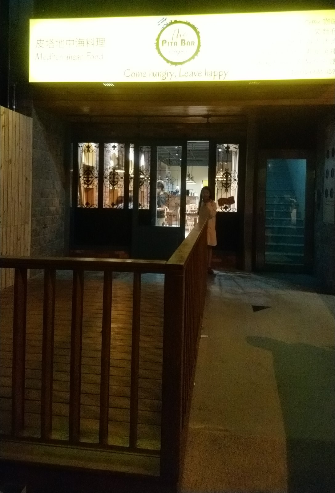
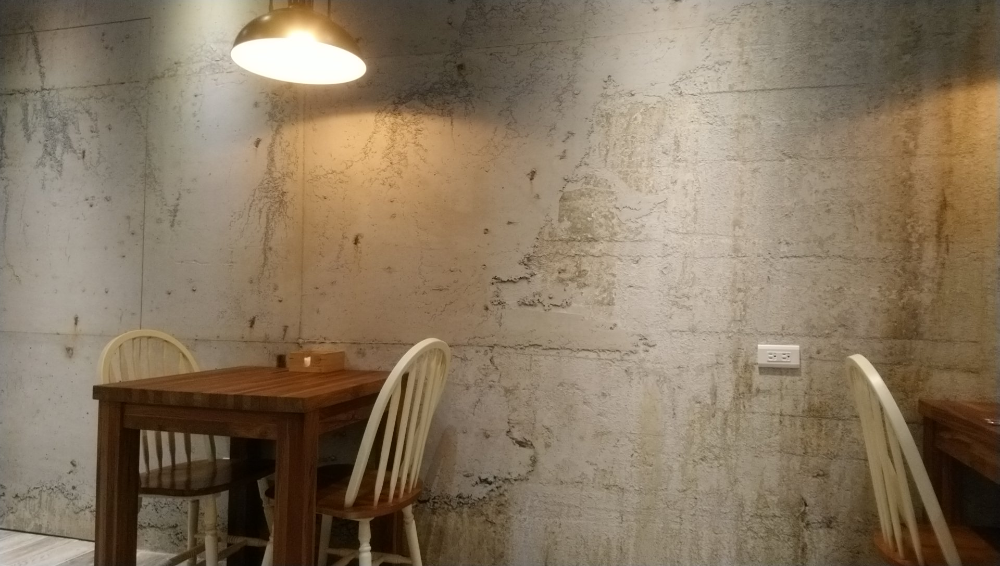
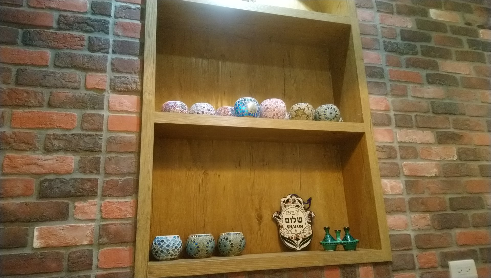
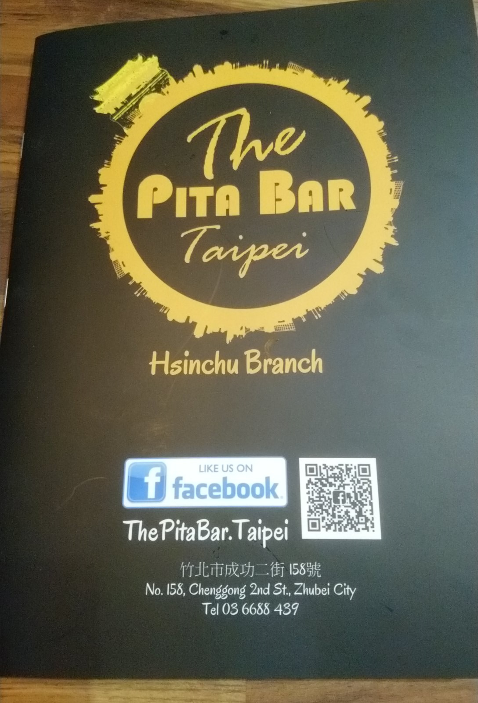
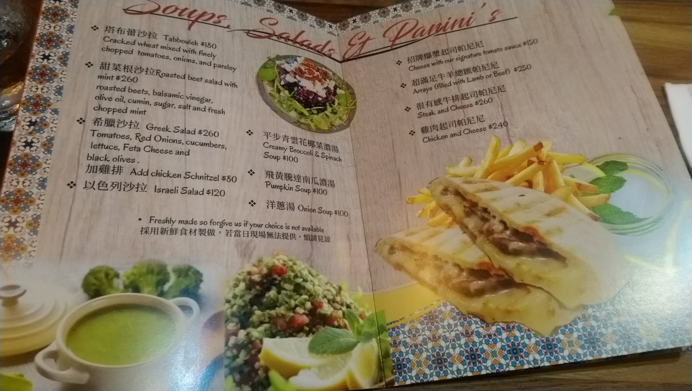
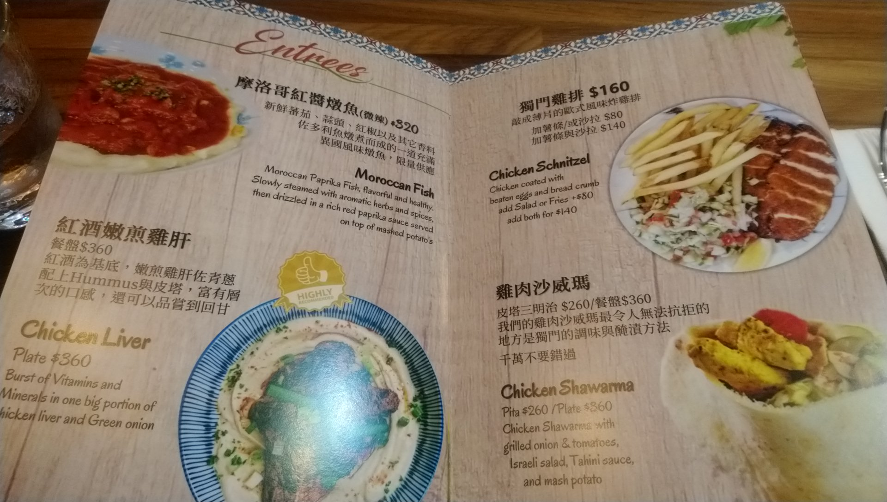
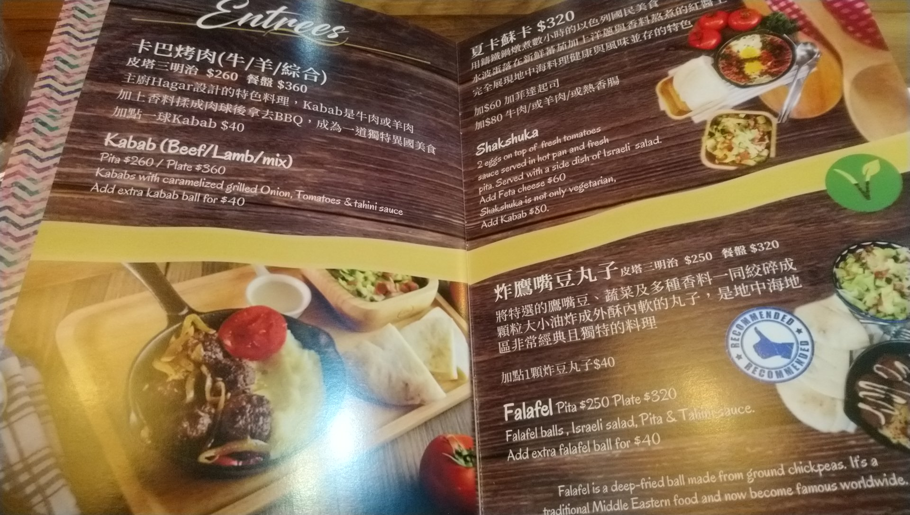
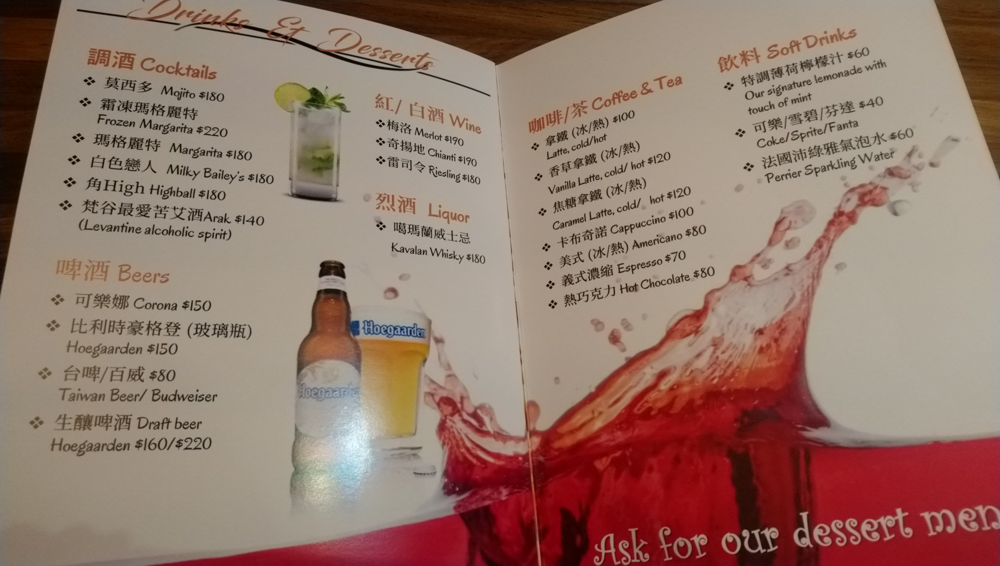
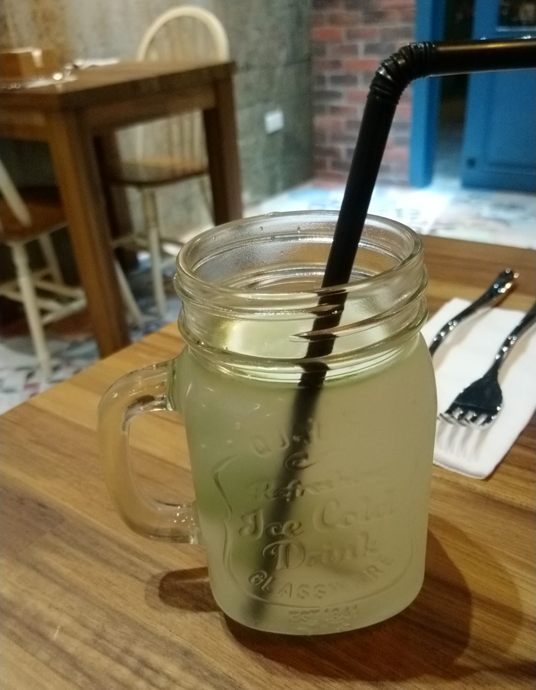
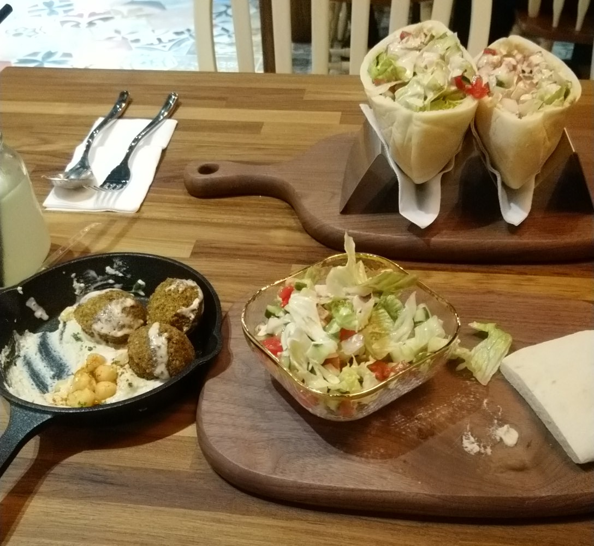

[竹北] 皮塔地中海料理
今天逛到附近，發現這家新開的店 - 皮塔地中海料理 The Pita Bar Taipei Hsinchu Branch，決定來踩雷看看，   
菜單如下:     
是踩雷，所以先點少少幾樣，
特調薄荷檸檬汁 - 
略餓，所以已經吃一些了才想到拍照， 上方是雞肉沙威瑪， 下方是炸鷹嘴豆丸子 - 
回家後，上網查一下，原來是台北的店下來開的，難怪感覺是有些基本水準。
幾道菜，都可以選 Pita 或 Plate 形式， Pita 就是廚師包好給你， Plate 就是都分開放，食客自己包。
可是奇怪了，Pita 比 Plate 便宜幾十元， 可是 Pita 的皮塔餅皮反而是一整個切對半， 塞入沙拉，肉類。 Plate感覺沙拉多了一點點，加上飲料可以抵20元，但皮塔餅皮只有3/4個， 沒明顯感覺 Plate 比較好啊。
踩雷結果是 - 不難吃，而且地中海料理算少見，是可以來嚐鮮， 附近有個大型的公有停車場，算好停車。